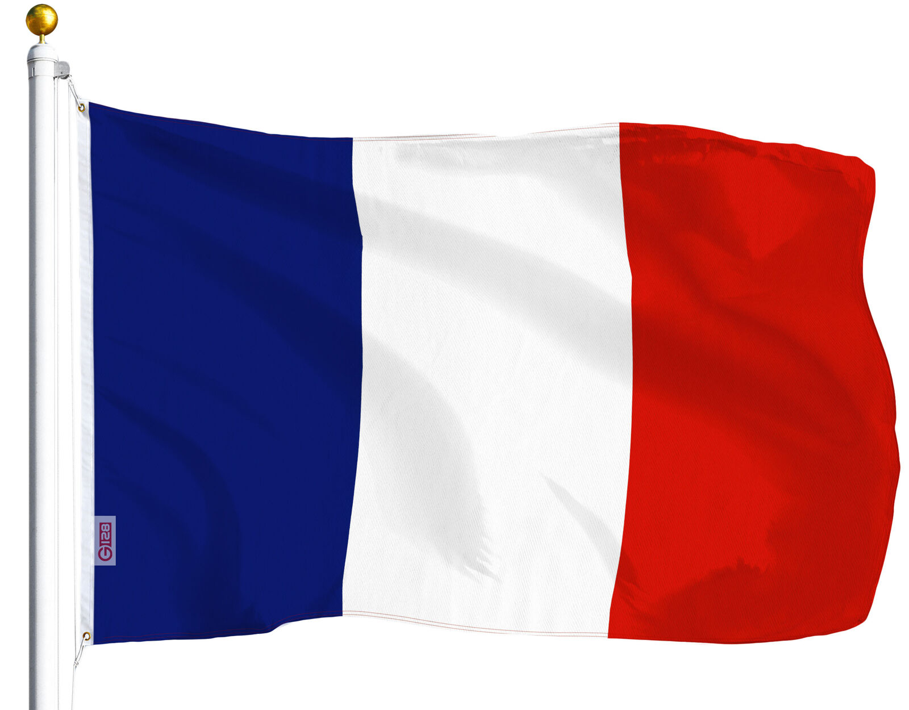

Introduction to French Culture
The French culture is a rich tapestry woven from a historical legacy, artistic brilliance, and a deep appreciation for the finer things in life. France, often hailed as the epitome of sophistication and romance, has a cultural identity that has significantly influenced the global landscape. At the heart of French culture lies a passion for the arts, with iconic contributions to literature, cinema, and the visual arts. From the profound works of existentialist philosophers like Jean-Paul Sartre to the cinematic masterpieces of directors such as François Truffaut, French intellectual and artistic pursuits have left an indelible mark on the world.
French Cuisine

Cuisine is another cornerstone of French culture, where meals are not just a means of sustenance but a celebration of gastronomy. The French take pride in their culinary expertise, and each region boasts its own specialties, reflecting a diverse range of flavors and techniques. Additionally, the French are known for their appreciation of fashion, with Paris standing as a global fashion capital.
French National Pride
 Social rituals and etiquette are deeply ingrained in French society, emphasizing politeness and respect. The French also hold a strong sense of national pride, evident in their commitment to preserving their language, history, and traditions. Overall, the French culture is a harmonious blend of elegance, intellectualism, and a profound appreciation for the art of living.Language
As the official language of France, French is the first language of 88% of the population. Even then, most others speak French as a second language.However, minority languages flourish in specific regions. For example, eastern provinces speak German while Flemish is spoken in the northeast and Italian is spoken in the southeast. Other communities within France speak several other languages.